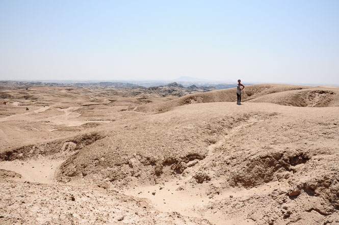
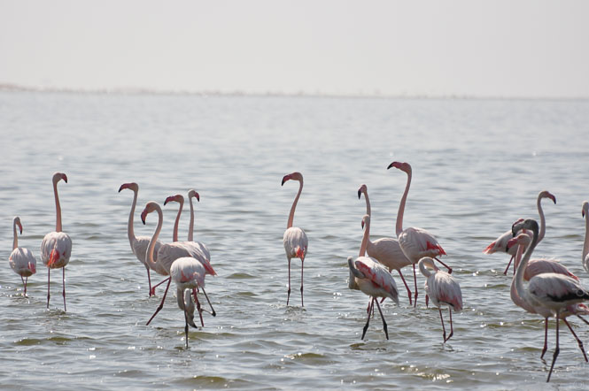
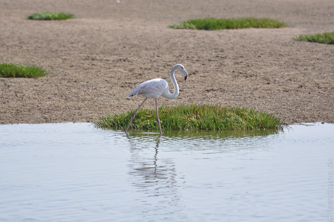
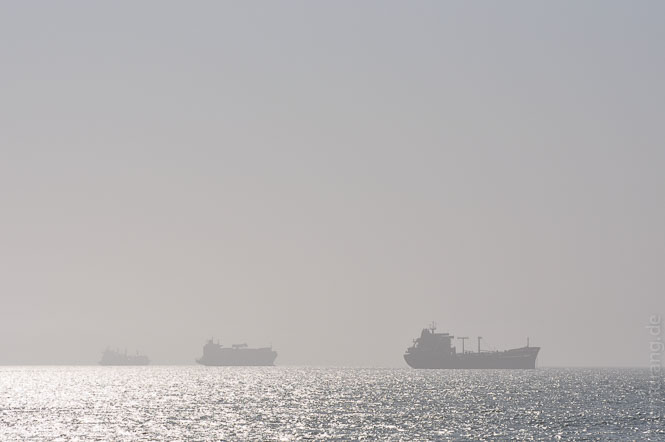
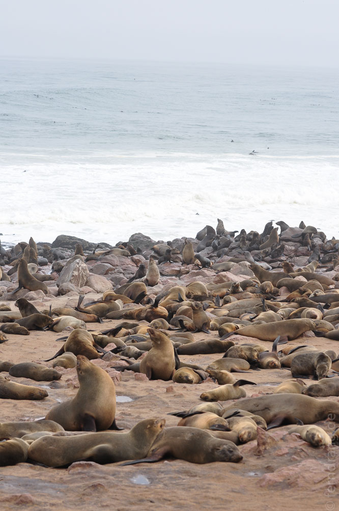
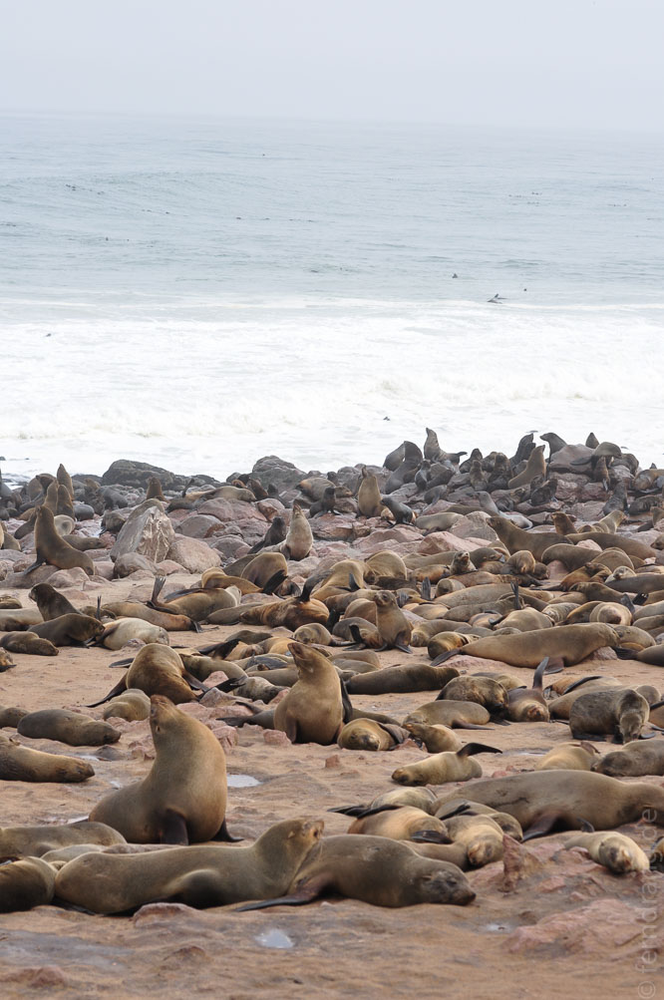
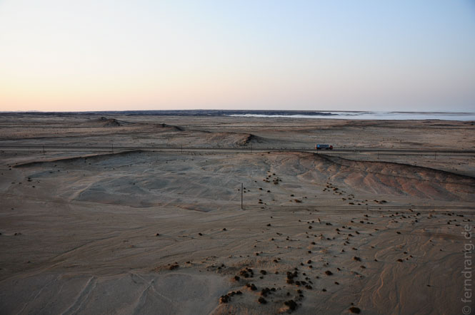
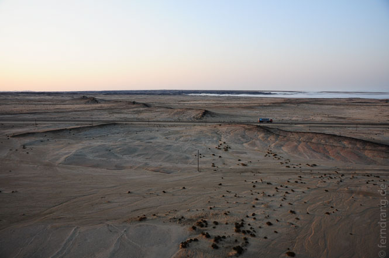

14. September 2010
Swakopmund und Umgebung
Obwohl Swakopmund selbst so tot wirkt, hat sich die Stadt zum Ausgangspunkt für viele Freizeitangebote entwickelt: Quadbiking, Paragliding, Fallschirmspringen, Dünenbuggys, Sandboarden und weitere Apfelstrudelgegenteile. Uns hat aber mehr die natürliche Umgebung angelockt, die durch das Aufeinandertreffen von Wüste und Meer interessant ist.
Der erste Ausflug war eine Wüstenrundfahrt auf dem "Welwitschia-Drive". Auf einer holprigen Schotterpiste wird man an einigen unterschiedlich sehenswerten Stellen entlang geführt und wünscht sich einen Geländewagen. Vorbei an kaum sichtbaren Flechten, die dem Boden einen leicht grünlichen Schimmer verleihen, gelangt man zu einem Tal, das Mondlandschaft genannt wird. In der unglaublich trockenen Hitze, die einem wie ein Fön ins Gesicht bläst, kann man in die eindrucksvoll kargen Schluchten blicken. Seinen Namen hat der Rundweg aber von der Hauptattraktion, der Welwitschia Mirabilis. Das ist eine dubiose, zweihäusige Wüstenpflanze, die aussieht wie ein gigantischer, alter Salat und dabei nicht besonders ansehnlich ist. Höhepunkt der Fahrt ist ein 1500 Jahre altes Exemplar, das eingezäunt in Gefangenschaft gehalten wird. Von einer kleinen Brücke aus, kann man ungläubige Blicke auf den meterbreiten Sonderling werfen.
Da wir gerade in der Nähe waren, haben wir auch Walvis Bay einen Besuch abgestattet. Die Stadt wirkt erstaunlicherweise noch leerer als Swakopmund! Im Süden liegt eine große Lagune, in der eine Unmenge Flamingos lebt. Landeinwärts fangen auch schon die Dünen an, von denen die Nr. 7 die größte Attraktivität zu haben scheint, denn dort kraxeln die Einheimischen am liebsten hoch.




Cape Cross
Am Sonntag hört Swakopmund auf zu existieren: schon morgens hat sich ein dichter Nebel über den Ort gelegt, alle Geschäfte sind geschlossen, kein Auto ist unterwegs. Wir haben uns auf den Weg Richtung Norden nach Cape Cross gemacht. Die Straße führt schnurgerade am Meer entlang. Der spärlich mit Büschen bewachsenen Ebene hat der Nebel jede Farbe entzogen. Die Evolution wird hier Menschen ohne Farbwahrnehmung und Autos ohne Lenkräder hervorbringen.
Hier fängt die sogenannte Skelettküste an, was sich an gestrandeten Schiffswracks bemerkbar macht. Noch unwirklicher ist der Ort Wlotzklasbaken, der aussieht wie eine Pioniersiedlung auf dem Mars. Später kommt Hentiesbai, wogegen Swakopmund wie eine Metropole wirkt. Irgendwann erreichten wir aber doch noch Cape Cross, wo eine Fellrobbenkolonie gegen den Wind stinkt. Zigtausende Tiere gehen hier beliebten Robbentätigkeiten wie Sonnenbaden, Fischen oder Zanken nach. Der Gestank ist überwältigend, aber man wird belohnt, indem man den Robben aus wenigen Metern Entfernung zugucken kann. Das Meer ist wild hier oben und gesprenkelt von unzähligen planschenden Robben. Die Szenerie könnte genauso gut in Alaska sein.
Ballon über Moon Valley
Zurück in Swakopmund mussten wir feststellen, dass Sonntags sogar viele Restaurants geschlossen sind. Trotzdem gibt es hier sehr viele Restaurants, in denen man auch sehr gut essen kann, sofern sie offen sind. Überhaupt mussten wir unser Bild von der Stadt etwas revidieren: Wenn die Sonne scheint - was sie manchmal tut - sehen zumindest die Fachwerkhäuschen ganz hübsch aus. Montags morgens erwacht die Stadt aus der Wochenendstarre und wirkt um die Hauptstraßen herum sogar fast geschäftig. Davon abgesehen hat Wlotzklasdingsbums neue Maßstäbe gesetzt.
Als Höhepunkt unseres Aufenthalts haben wir eine kurze Ballonfahrt über der Wüste unternommen. Noch vor Sonnenaufgang sind wir abgeholt worden, um mit den ersten Sonnenstrahlen schon zu schweben. Könnte man die Richtung selbst bestimmen, wäre es die perfekte Art zu reisen. Laut- und schwerelos gleitet man dahin, und das immer ohne Fahrtwind. Mal sind wir 500 mal nur einen halben Meter über dem Boden geflogen und hatten dabei einen fantastischen Ausblick auf das Mondtal und den Küstennebel, der seine gierigen Finger in die Wüste streckt. Das Beste waren aber die ungläubigen Gesichter einer Handvoll Arbeiter, die wir mit dem Ballon in ihrer morgendlichen Trödelei aufgeschreckt haben. Aus ihren dunklen Gesichtern haben sie von Ohr zu Ohr gestrahlt. Anschließend gab es ein Sekt-Frühstück auf dem Anhänger - kein schlechter Start in den Tag. Und da diesmal auch Swakopmund etwas von der Sonne abbekommen hat, haben wir einen ganz gemütlichen Tag am Strand verbracht.


 



 
